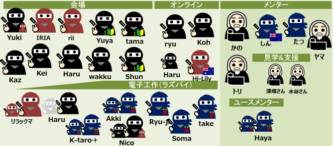
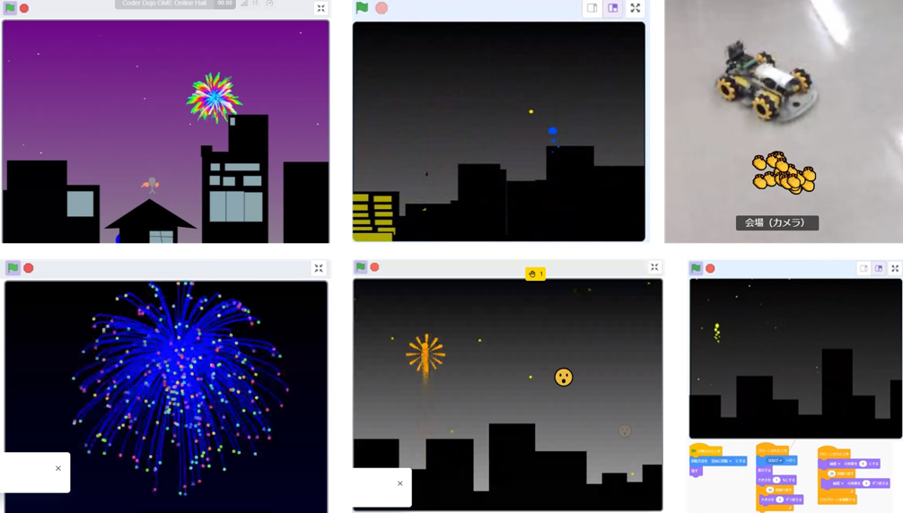
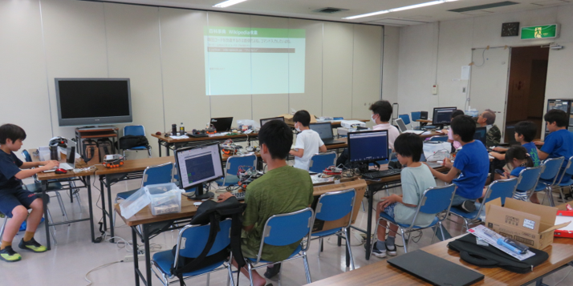
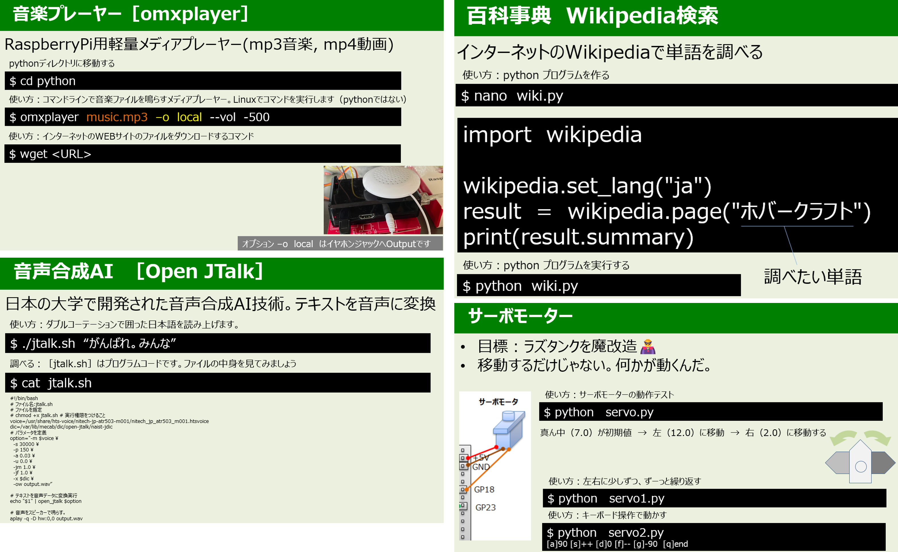

午前と午後の２回開催
第52,53回 夏だからScratchで打ち上げ花火大会＆ラズベリーパイ講座
午前はScratchプログラミングで大人でも難しい打ち上げ花火、午後は音声合成AIや百科事典WEB検索のラズベリーパイ講座を開催
本日の青梅Dojo出欠確認です
ニンジャの申し込みは午前19名・午後10名の延べ29名。保護者家族10名、メンター7名の延べ46名が参加してくれました。

オンラインと会場に今日の参加者とテーマを説明します。

午前ワークショップ（Scratchプログラミング入門・初級）
午前は４ブロックに分かれてワークショップを行いました。CoderDojoでは参加した子供たちのことをニンジャと呼びます。
１．はじめて参加するニンジャ向け入門プログラミング
２．みんなで同じScratchテーマによるレベルアップ講座
３．自分でテーマを決めてがんばる初中級プログラミング
４．オンラインも同時開催。
プログラミング入門コースは、今日はじめてCoderDojo青梅に参加した小学生３人（とその保護者）が参加してScratchベテランの中学生ユースメンターHaya-Hayaくんによる「:雲:くものアスレチック」を楽しみました。
ニンジャの保護者は「楽しかった。また来ます」との嬉しい感想。
みんなで同じテーマのScratchレベルアップ講座は、大人でも作るのが難しい「夏だから花火:打ち上げ花火:」大会です。
会場ではレベルアップしたい３名とオンラインは、遠方からリモート参加している大学生と現役エンジニアによるメンターがサポートしてのワークショップとなりました。
自分でテーマを決めるニンジャは、Scratch作品づくりとmicro:bit（マイクロビット）による電子工作。電子工作はリモート操作する車の開発で、micro:bitを２個使って、前後左右の操作用と車を動かす駆動用のプログラムを開発。

発表会は、みんながつくったScratch作品をお披露目します。サンプルの花火を各ニンジャがそれぞれ改造してみんな違う花火になったので、文字通り「花火大会」になりました。

午後ワークショップ（ラズパイと電子工作）
午後はラズタンクを改造するためのラズパイ応用講座。
１．メディアプレーヤー omxplayer
２．音声合成AI Jtalk
３．音楽プレーヤー aplay
４．百科事典 Wikipedia検索
５．サーボモーター
これらのコードをラズタンクに組み込んで、さまざまな機能を搭載したAIロボットを目指します。
２時間ではとても足りないくらいの内容です。予めコードは検証済みなので、手順通り操作して動いて当たり前なのですが、ここからレベルアップするにはコードを改造してみんなが予想できない機能を開発してくれることを期待しています。

ラズベリーパイ講座の教材サンプル

次回は8月20日(日)開催です。
お問い合わせのあるCoderDojo青梅の午後の部は、青梅IT未来塾の修了生が参加できます。修了生ではないけれど参加したいという意欲のある子（小５以上）には個別にLinux & Python教室を提供し、そのあとで午後の部に参加しています。それまでは午前のmicro:bitをお勧めします。
Connpassでイベント告知するので、またの参加をお待ちしています。参加申し込みはこちらのConnpassから
 CoderDojo青梅にご質問メールはこちら
CoderDojo青梅にご質問メールはこちら
😃